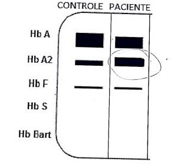
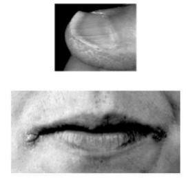

Questão 1 · Reposição oral de f erro · Perf il de f erro na anemia f erropriva · Quadro clínico da anemia f erropriva · 4000185707Em relação à anemia por deficiência de ferro, é correto afirmar:
A A causa mais importante de anemia ferropriva, em adultos, é a perda crônica de sangue, especialmente, a perda de sangue menstrual e gastrointestinal.
B As alterações na pele e nas mucosas, incluindo uma língua lisa, unhas quebradiças, coiloníquia e queilose são alterações típicas da fase inicial da anemia por deficiência de ferro.
C A ferritina é uma medida das reservas corporais de ferro, de modo que o seu nível, mesmo em estados inflamatórios ou infecciosos, reflete, corretamente, os estoques de ferro do corpo.
D A anisocitose é um achado frequente na anemia ferropriva e antecede a microcitose e a hipocromia.
E Após 2 meses de tratamento com 100mg de ferro elementar via oral, diariamente, a maioria dos pacientes tem a correção total do nível de hematócrito e da hemoglobina, caracterizando o término da reposição de ferro oral.
Questão 2 · Perf il de f erro na anemia f erropriva · Fisiopatologia da anemia f erropriva · 4000183881Os estágios da de ciência de ferro são caracterizados pelos fenômenos gradativos de depleção dos estoques, de ciência de ferro sem anemia e de ciência de ferro com anemia. Considerando, respectivamente essas alterações em ordem cronológica, esperase que o comprometimento dos exames laboratoriais se faça na seguinte sequência:
A saturação da transferina – ferritina – hemoglobina.
B VCM e RDW – saturação da transferrina – ferritina.
C ferritina – saturação da transferrina – hemoglobina.
D VCM e RDW – hemoglobina - reticulócitos.
Questão 3 · Coiloníquia · 4000183407Durante o exame físico de uma paciente de 25 anos, você observa a alteração ungueal apresentada na figura abaixo. Qual dos sintomas/sinais abaixo citados NÃO é relacionado ao achado?

A Vontade compulsiva de chupar gelo
B Disfagia
C Síndrome das pernas inquietas
D Coloração avermelhada da urina após ingestão de beterraba
E Abatiestesia
Questão 4 · Diagnóstico da anemia f erropriva · 4000183370Paciente do sexo masculino, 1 ano e 7 meses, foi amamentado no peito até os dois meses, recebendo, após esta idade, leite de vaca. Nunca fez uso de ferro complementar e, ao exame físico, apresenta palidez palmar importante. Foi levantada a hipótese diagnóstica de anemia ferropriva e solicitado hemograma. Nesse caso, espera-se encontrar no hemograma:
A Macrocitose, hipercromia, ferritina elevada e RDW (
B Microcitose, hipocromia, ferritina baixa e RDW elevado.
C Microcitose, hipocromia, ferritina baixa e RDW baixo.
D Macrocitose, hipercromia, ferritina elevada e RDW elevado.
Questão 5 · Alterações mucosas Glossite atróf ica e queilite angular · 4000182837Paciente de 18 anos foi encaminhada ao Ambulatório de Hematologia para investigação de anemia hipoproliferativa devido a microcitose e anisocitose ao hemograma. Diante da hipótese de anemia ferropriva, que alteração do exame físico, dentre as abaixo, poderia corroborar esse diagnóstico?
A Lesões cutâneas hipocrômicas
B Diminuição do reflexo patelar
C Queilite angular
D Anel de Kayser-Fleischer
Questão 6 · Diagnóstico da anemia f erropriva · Pica · 4000182782Menino de 2 anos foi trazido à Emergência por sua irmã mais velha (16 anos) por febre baixa e coriza. À admissão, informou ser ela a cuidadora do irmão para que a mãe pudesse trabalhar. Referiu que ele estava com um comportamento estranho: vinha comendo o reboco da parede e a terra que cava presa em seus sapatos. A criança apresentava palidez, temperatura axilar de 37,8° C, hiperemia de orofaringe e sopro sistólico. O restante do exame encontrava-se dentro da normalidade. Com base na história e no exame físico, foi solicitado um hemograma. Assinale a alternativa que contempla o que se esperaria encontrar como resultado.
A Hemoglobina de 6,5 g/l – VCM de 65 fl – CHCM de 23 pg – RDW de 18%
B Hemoglobina de 7 g/l – VCM de 80 fl – CHCM de 33 pg – RDW de 15%
C Hemoglobina de 8 g/l – VCM de 105 fl – CHCM de 30 pg – RDW de 18%
D Hemoglobina de 12 g/l – VCM de 80 fl – CHCM de 35 pg – RDW de 15%
Questão 7 · Def inição das síndromes talassêmicas · Diagnóstico dif erencial das anemias microcíticas · 4000164318Pré-escolar do sexo masculino, de 4 anos de idade, compareceu a consulta rotina de puericultura. Pais não relatavam queixas clínicas neste atendimento. Descrevem boa alimentação e bom desenvolvimento global. Peso e estatura ambos nos percentis 50 (P50) para idade e gênero. Pediatra observou mucosas levemente descoradas (+/4+) ao exame clínico, e sem outros achados de importância no exame físico. O paciente retorna hoje (1 semana após) para avaliação de resultado de exame hematológico solicitado na consulta prévia. Traz o seguinte laudo de exame hematimétrico: eritrócitos 5,55 milhões/mm³ (VN: 3,6 a 5,2); hemoglobina 10,40 g/dL (VN: 11 a 13,1 g/dL); hematócrito 32,10% ( VN: 35,0 - 43,0%); VCM 57,83 fL (VN: 74,0 a 102,0 fL); HCM 18,73 pg (VN: 23,0 a 31,0 pg); CHCM 32,39 g/dL (VN: 26,0 a 34,0 g/dL) RDW 13,6 % (VN: 11,5 a 14,5%). Série vermelha: microcitose e hipocromia discretas; ausência de anisocitose. Com base nos dados clínicos e laboratoriais apresentados, qual a alternativa que corresponde a melhor conduta a ser adotada para o caso?
A Solicitar exame de eletroforese de hemoglobina.
B Melhorar o aporte de ferro com alimentos ricos em ferro.
C Prescrever ferro elementar (4 mg/k/dia) por 3 meses.
D Pesquisar perda de sangue oculto nas fezes.
Questão 8 · Diagnóstico dif erencial das anemias microcíticas · Talassemias · 4000163580Pré-escolar, sexo masculino, 4 anos, com história de anemia não responsiva ao sulfato ferroso na dose de 5mg/kg/dia, administrado durante seis meses, meia hora antes das refeições com suco de frutas cítricas. Antecedentes pessoais sem intercorrências. A mãe teve anemia na infância e fez vários tratamentos. História nutricional: leite materno exclusivo até o sexto mês de vida. Atualmente come arroz, feijão, frutas, carne (quatro vezes por semana) e leite integral (três vezes ao dia). Exame físico: paciente pálido, sem outras alterações. Hemograma: Hm: 6.000.000/mm³; Hb: 10,2g/dL; Ht: 30%; VCM: 50fL; HCM: 16pg; CHCM: 22%; RDW: 12%; morfologia da série vermelha: hipocromia e microcitose; leucometria: 7.600/mm³(eos: 2%, basó los: 0%, bastões: 2%, seg: 36%, linf: 58%, mon: 2%) e plaquetas: 300.000/mm³; reticulócitos: 1,5%. Para confirmar a hipótese diagnóstica mais provável, o exame a ser solicitado é:
A Ferritina.
B Mielograma.
C Eletroforese de hemoglobina.
D Curva de fragilidade osmótica.
E Índice de saturação da transferrina.
Questão 9 · Quadro clínico da anemia f erropriva · Perda crônica de f erro · 4000151651Homem de 54 anos com relato de sangramento crônico intermitente pelas fezes. Refere estar bem e traz o seguinte hemograma coletado há uma semana da consulta: Hb 6,7 g/dl, Ht 20%, VCM 78 . HCM 23 pg. RDW 20%, Leucócitos totais 5.300/mm³, plaquetas 550.000/mm³. Relata ainda já ter recebido transfusão sanguínea várias vezes, última há 45 dias; nega uso de medicações. Seus sinais vitais eram: PA 130x80 mmHg. FC 62 bpm, SaO2 98% e peso de 75kg. Qual seria o manejo mais adequado dessa anemia?
A Indicar transfusão de 1 CH e iniciar reposição de ferro e ácido fólico.
B Indicar transfusão de 2 CH e iniciar reposição de ferro imediatamente.
C Indicar transfusão de 1 CH, solicitar ferrocinética e iniciar reposição de ferro após.
D Contraindicar transfusão, solicitar ferrocinética e iniciar reposição de ferro após.
Questão 10 · Quadro clínico da anemia f erropriva · 4000145732Qual dos sintomas ou sinais abaixo NÃO ocorre na anemia ferropriva grave?
A Hipertrofia gengival.
B Queilose.
C Coiloníquia.
D Disfagia secundária à Síndrome de Plummer-Vinson.
E Fadiga.
Questão 11 · Fisiopatologia e apresentação da betatalassemia · 4000144614Um paciente que apresente Hb A2 aumentada na eletroferese, tem forte indicação diagnóstica para:
A anemia falciforme.
B traço falciforme.
C talassemia alfa.
D talassemia beta menor.
Questão 12 · Perf il de f erro na anemia f erropriva · Diagnóstico dif erencial das anemias microcíticas · 4000144345Classif icações das anemias Quanto ao diagnostico laboratorial das anemias, o encontro de hemoglobina de 9,0 g/dl, VCM diminuído < 80 e RDW elevado > 14,5 sugere anemia:
A Falciforme.
B Ferropriva.
C Aplásica.
D Megaloblástica.
Questão 13 · Pica · Tratamento da anemia f erropriva · 4000143837Homem de 21 anos é internado com queixa de fraqueza nos últimos 6 meses. Familiares relatam que nesse período adquiriu o hábito de comer gelo todos os dias. O único achado de exame físico é o descoramento de mucosas. O hemograma mostra hemoglobina de 7,9 g/dL, 8.500 leucócitos/mm3 sendo 40% neutró los, 40% linfócitos e 20% eosinó los. Dentre os abaixo, o volume corpuscular médio (em fL) mais provável e o tratamento mais adequado são, respectivamente:
A 115, transfusão de concentrado de hemácias e folato.
B 75, transfusão de concentrado de hemácias e ferro.
C 75, albendazol e ferro.
D 75, albendazol e corticoide
Questão 14 · Anemia f erropriva · Diagnóstico da anemia f erropriva · Hematologia · 4000143207Mulher de 62 anos, com queixa de fadiga, dispneia e intolerância aos exercícios há algumas semanas, nega emagrecimento e uso de medicamentos. No exame físico, apresenta palidez cutâneo-mucosa (++/4+), queilose, sopro sistólico II/VI, audível em todo o precórdio e síndrome das pernas inquietas. Os exames complementares mostram hemoglobina = 9,5g/dL, VCM = 72 , CHCM = 28g/dL, reticulócitos = 2%, ferro sérico = 20mcg/dL (VR = 50-150mcg/dL), capacidade total de ligação do ferro = 450mcg/dL (VR = 250- 370mcg/dL) e ferritina = 14ng/mL. O próximo passo na abordagem da anemia apresentada pela paciente deve ser:
A realizar TC de tórax e abdômen
B iniciar sulfato ferroso 40mg 3x/dia
C realizar colonoscopia e endoscopia digestiva alta
D iniciar ácido fólico 1mg/dia e vitamina B12 1.000U/dia
Questão 15 · Investigação da etiologia da f erropenia · 4000142849Um paciente com 55 anos de idade procura a UBS com resultado de exames que mostram o diagnóstico de anemia por deficiência de ferro. Nega a presença de perda sanguínea visível. Nesse caso clínico, o próximo passo a ser seguido é
A prescrever antivermífugo de largo espectro.
B pesquisar sangue oculto nas fezes.
C solicitar uma endoscopia do trato digestivo.
D fazer a reposição de ferro.
Questão 16 · Diagnóstico da anemia f erropriva · Avaliação laboratorial do f erro · 4000142757Quais as alterações são comumente encontradas em um paciente com anemia ferropriva?
A VCM baixo e RDW alto.
B VCM baixo e RDW baixo.
C VCM baixo e RDW normal.
D VCM alto e RDW alto.
E VCM alto e RDW baixo.
Questão 17 · Quadro clínico da anemia f erropriva · 4000141058Menina de 18 meses, previamente hígida, é trazida para a consulta na Unidade Básica de Saúde. A menor era institucionalizada e foi adotada há 2 meses. A mãe adotiva relata que a menor iniciou há 1 mês com quadro de tosse, febre baixa e inapetência e que foi levada a um pronto-socorro, no qual realizaram radiografia de tórax e prescreveram amoxicilina 50 mg/kg/dia, durante 10 dias, para quadro de pneumonia. O antibiótico terminou há 14 dias, porém a criança continua sintomática. Ao exame físico, está em regular estado geral, emagrecida, descorada +/4, levemente taquipneica, sem desconforto respiratório, com frequência cardíaca de 110 bpm e afebril. Apresenta gânglio cervical de 2 cm de diâmetro. Ausculta pulmonar com roncos e estertores subcrepitantes difusos. Ausculta cardíaca e abdome sem alterações. Recebeu as seguintes vacinas, de acordo com a caderneta de vacinação: BCG e hepatite B ao nascimento, 3 doses de pentavalente e VIP com 2, 4 e 6 meses, 2 doses de pneumocócica 10-valente e 2 doses de meningocócica conjugada tipo C com 3 e 5 meses. Exames realizados no início do quadro: radiografia de tórax apresenta condensação em lobo médio e hemograma: Hb = 10,1 g/dL, Ht = 30%, volume corpuscular médio (VCM) = 68 28 g/dL, coe ciente de variação do volume eritrocitário (RDW) = 18%, leucócitos = 10 200 (3% bastonetes, 56% segmentados, 3% eosinófilos, 2% monócitos, 36% linfócitos), plaquetas = 390 000/mm3. Antes da adoção, foram realizadas as sorologias para HIV, sífilis e hepatite C, todas negativas. De acordo com os dados clínicos e hematimétricos, a principal hipótese é de
A anemia falciforme.
B anemia ferropriva.
C anemia hemolítica autoimune.
D anemia associada ao quadro infeccioso.
E leucemia linfoblástica aguda.
Revisar: possível letra faltando em enunciado
Questão 18 · Hematologia · Talassemias · 4000130283Homem, 29a, retorna a consulta com exames solicitados por apresentar sonolência às atividades laborais. Antecedentes pessoais: anemia em diversas ocasiões na infância e adolescência, tratada com reposição de ferro, de forma irregular, sem melhora completa. Hemácias= 5,80*10⁹/L; hemoglobina= 10,3g/dL, volume corpuscular médio= 57 fL, RDW= 12,8%; contagem de reticulócitos= 162*10⁹/L; leucócitos= 5,7*10⁹/L (sem alterações no diferencial); plaquetas= 189*10⁹/L; Eletroforese de hemoglobina= HbA= 93,5%, HbA₂= 4,5% e HbF= 2,0%; ferritina= 35 ng/ml e ferro sérico= 65µg/dL. O DIAGNÓSTICO É:
A Anemia por deficiência de ferro.
B Anemia da doença crônica.
C Traço talassêmico.
D Traço falciforme.
Questão 19 · Diagnóstico dif erencial das anemias microcíticas · Talassemias · 4000127342Paciente masculino, 25 anos, vegetariano, apresenta-se para exame admissional com exames realizados. Traz o seguinte hemograma: Hemácias: 5,3milhões/mm³ (VR: 4,56milhões/mm³) Hb: 11,1g/dL (VR: 13,5-17,5) Ht: 33% (VR: 40-52) VCM: 72fL (VR: 81-99) HCM: 25pg (VR: 30-34) RDW: 13% (VR: 12-14) Leucócitos: 6500/mm³ (VR: 4000-10000) Plaquetas: 452000/mm³ (VR: 150000-450000) – presença de hemácias em alvo. Demais exames sem anormalidades. Nega etilismo. Relata estar assintomático e nega doenças prévias, mas relata que sempre teve alguma alteração em hemogramas anteriores, sendo que nunca lhe foi orientado nenhum tratamento específico. LEGENDA: VR: valor de referência; VCM: volume corpuscular médio; HCM: hemoglobina corpuscular média; RDW: índice de anisocitose. Em relação ao diagnóstico provável para a anemia encontrada, qual exame seria mais específico para confirmação?
A Perfil bioquímico do ferro.
B Dosagem de vitamina B12.
C Eletroforese de hemoglobina.
D Mielograma usando corante azul da Prússia.
Questão 20 · Perf il de f erro na anemia f erropriva · 4000119059Considere os índices hematimétricos: VCM (volume corpuscular médio), HCM (hemoglobina corpuscular média), CHCM (con- centração de hemoglobina corpuscular média), RDW (red cell distribution width) e CTLF (capacidade total de ligação de ferro). Na anemia ferropênica, ocorre aumento de
A RDW e CTLF.
B saturação de transferrina e VCM.
C ferritina sérica e RDW.
D CTLF e HCM.
E saturação de transferrina e CHCM.
Questão 21 · Avaliação laboratorial do f erro · Classif icação das anemias Foco na f erropriva · 4000118605A anemia ferropriva é um problema de saúde pública mundial de alta prevalência nos países em desenvolvimento. Os achados laboratoriais que sugerem anemia carencial por deficiência de ferro são:
A VCM diminuído, ferro sérico e ferritina reduzida.
B VCM elevado, RDW normal, plaquetas diminuídas.
C VCM diminuído, RDW elevado, plaquetopenia.
D VCM normal, ferro sérico baixo, ferritina elevada.
E VCM aumentado, ferritina baixa e reticulócitos aumentados.
Questão 22 · Ref ratariedade ao tratamento da anemia f erropriva · 4000115312Menina, 1 ano e 2 meses de idade, está em acompanhamento ambulatorial, em tratamento de anemia diagnosticada há 2 meses. No início do tratamento a hemoglobina era 9,7 g/dL. A mãe refere que está oferecendo sulfato ferroso na dose diária de 5 mg de ferro elementar/kg, longe das refeições lácteas, e que está seguindo todas as recomendações dietéticas. Na consulta de hoje foram colhidos novos exames, com os seguintes achados: A criança encontra-se com o exame clínico sem alterações e nega intercorrências desde a última consulta. O exame que provavelmente revelará a causa da persistência da anemia é:

A Perfil de ferro
B Dosagem de vitamina B12
C Pesquisa de anticorpos irregulares
D Dosagem de hormônios tireoidianos
E Eletroforese de hemoglobina
Questão 23 · Diagnóstico dif erencial das anemias microcíticas · 4000114683Em relação às anemias hipocrômicas e microcíticas:
A A causa mais comum é deficiência de vitamina B12;
B Devem ser tratadas com sulfato ferroso;
C Devem ser investigadas com mielograma;
D Os principais diagnósticos diferenciais são anemia ferropriva, talassemia e anemia de doença crônica.
Questão 24 · Perf il de f erro na anemia f erropriva · Diagnóstico dif erencial das anemias microcíticas · 4000112684Menina, 6 meses, está internada na enfermaria para tratamento de pneumonia, em uso de antibioticoterapia com ampicilina há 3 dias. Está afebril há 12 horas. Ao exame físico: bom estado geral, com palidez cutânea, sem desconforto respiratório, FR 30 ipm. Ausculta pulmonar: murmúrio vesicular diminuído em base a D. Ausculta cardíaca: 2 BRNF sem sopros, FC 150 bpm, pulsos cheios, perfusão 2 segundos. PA 90 x 50 mmHg. Abdome: fígado e baço não palpáveis, RH+. AP: fez o uso de leite materno exclusivo e atualmente está na introdução de papa de frutas e legumes. Hemograma: Hb 8 g/dl, Ht 25%, HCM 18 pg, VCM 50 FI, RDW 20%, GB 10000, neutró los 65% (predomínio de segmentados), linfócitos 30%, monócitos 2%, eosinófilos 3%. Plaquetas 300.000. Qual o melhor exame para elucidar o diagnóstico nesta situação?
A VHS.
B Ferritina.
C Saturação de transferrina.
D Reticulócitos.
Questão 25 · Reposição oral de f erro · 4000110528Mulher de 75 anos, com quadro de fraqueza progressiva, irritabilidade, intolerância aos exercícios há 1 mês. Relatava já ter realizado tratamento para doença do re uxo gastroesofágico. Ao exame físico encontrava-se em regular estado geral, descorada 3+/4+, hidratada, PA 122 x 72 mmHg, frequência cardíaca 92 bpm. Aparelho respiratório e cardiovascular sem alterações. Abdome sem massas palpáveis. Toque retal sem melena ou sangue em dedo de luva. Exames complementares: Hemograma: hemoglobina: 6,8 g/dL (referência: 12-16); volume corpuscular médio: 78fL (referência: 80-100); leucócitos: 4.550/mm³ (referência: 4.000-10.000), com diferencial normal. plaquetas: 359.000/mm³ (referência: 150.000- 400.000), além de ferropenia. Endoscopia digestiva alta com esofagite erosiva distal e colonoscopia sem alterações. Além do tratamento da doença de base, está indicada (o) inicialmente:
A transfusão de 02 concentrados de hemácias.
B administração de hidróxido férrico endovenoso.
C administração de hidróxido férrico intramuscular.
D administração de sulfato ferroso via oral.
E aumento de alimentos ricos em ferro.
Questão 26 · Pica · 4000106154Pagofagia é tratada habitualmente com
A sertralina.
B eritropoetina.
C folato.
D ferro.
E cobalamina.
Questão 27 · Tratamento · Tratamento da anemia f erropriva · 4000099546Lactente, 11 meses, apresenta-se com mucosas descoradas e palidez cutânea. Está inapetente e com geofagia. Dieta essencialmente láctea e baixa ingesta de alimentação sólida. Hb= 9,5 g/dL Htc= 29%; Reticulócitos= 1,7%; VCM= 62 ; HCM= 22pg; RDW= 18%; Ferritina= 8ng/mg. A CONDUTA É:
A Investigar alergia à proteína do leite de vaca.
B Investigar parasitose.
C Solicitar eletroforese de hemoglobina.
D Prescrever sulfato ferroso.
Questão 28 · Reposição oral de f erro · Tratamento · Avaliação de resposta ao tratamento da anemia f erropriva · 4000083516Sobre anemia ferropriva, assinale a alternativa correta.
A O tratamento com gluconato de ferro é superior ao tratamento com sulfato de ferro.
B A resposta ao tratamento geralmente é rápida, e o aumento da hemoglobina começa aser observado 7 a 10 dias após o início do tratamento.
C A resposta ao tratamento geralmente é rápida, e o aumento dos reticulócitos começaa ser observado 14 a 18 dias após início do tratamento.
D A resposta ao tratamento geralmente é rápida, e os pacientes apresentam normalização da hemoglobina 14 a 21 dias após o início do tratamento. ida oib pr ed
Questão 29 · Anemia f erropriva na inf ância · Perf il de f erro na anemia f erropriva · Avaliação laboratorial do f erro · 4000080427Menino com 6 anos de idade apresenta astenia e palidez. Sua mãe, em razão disso, resolve levá-lo ao pediatra e refere que ele sempre está com sono. Ao exame físico, o pediatra observou palidez sem visceromegalias. Segundo a mãe, não tem história familiar de anemia, e sua alimentação é pobre em proteínas e verduras, mas rica em carboidratos. Os resultados de seus exames laboratoriais foram: Hb 6,5 g/dl, VCM 64 fL, leucócitos 5600/mm³, plaquetas 650.000/mm³, índice de saturação da transferrina 7%, ferritina 8 ng/ml. Com base nesse quadro, o diagnóstico provável e o tratamento adequado são, respectivamente,
A talassemia e concentrado de hemácias 10 ml/kg.
B anemia ferropriva e concentrado de hemácias 10 ml/kg.
C anemia ferropriva e sulfato ferroso 4 mg/kg/dia.
D microesferocitos e ácido fólico 5 mg/dia.
Questão 30 · Diagnóstico dif erencial das anemias microcíticas · 4000079437Ana Maria, 50 anos, apresenta um hemograma que mostra microcitose e hipocromia de leve a moderada com o RDW normal. Com base nestas informações podemos afirmar que este exame é compatível com:
A Anemia encontrada em estados inflamatórios e infecciosos crônicos.
B Anemia ferropriva.
C Anemia por deficiência de vitamina B12.
D Anemia por deficiência de ácido fólico.
E Nenhuma das alternativas anteriores.
Questão 31 · Diagnóstico da anemia de doença crônica · Hematologia · 4000076622Diagnóstico dif erencial das anemias microcíticas Mulher negra de 26 anos procura atendimento com queixa de fraqueza e desânimo há algumas semanas com piora progressiva. Relata febre e emagrecimento. O exame físico mostra mucosas descoradas 2+/4+, sem outras alterações. Exames laboratoriais revelam hemoglobina = 7,8g/dL; hematócrito = 22%, VCM = 77fL, CHCM = 25pg, leucócitos = 10.500/mm³ , plaquetas = 550.000/mm³ , reticulócitos = 3,0%, ferro sérico = 30µg/dL (normal de 35 a 150µg/dL) e capacidade de ligação do ferro = 200µg/dL (normal de 220 a 420µg/dL). A classificação e a causa da anemia microcítica, respectivamente, são:
A normocrômica / anemia falciforme
B hipocrômica / anemia de doença crônica
C hipocrômica / anemia por deficiência de ferro
D normocrômica / anemia por deficiência de eritropoietina
Questão 32 · Diagnóstico dif erencial das anemias microcíticas · 4000050818Anemia hipocrômica e microcítica é uma definição laboratorial que engloba todas as anemias caracterizadas por hemácias pequenas e com baixo conteúdo de hemoglobina resultante de baixa síntese. Assinale a alternativa CORRETA sobre o tema:
A A causa mais comum é a deficiência de ferro, condição adquirida e prevalente globalmente. Devido a sua alta incidência e prevalência a reposição de ferro deve ser feita empiricamente sem a necessidade de demais investigações.
B A causa mais comum é a deficiência de ferro, condição adquirida e prevalente globalmente. A deficiência de ferro deve ser documentada laboratorialmente para evitar-se a reposição inadequada de ferro em pacientes com talassemias ou anemia de doença crônica.
C Talassemias são doenças adquiridas e são um importante diagnóstico diferencial das anemias hipocrômicas e microcíticas.
D A causa mais comum são as Talassemias, condições hereditárias caracterizadas pela deficiência ou ausência da produção das cadeias globinas da hemoglobina.
Questão 33 · Perf il de f erro na anemia f erropriva · Quadro clínico da anemia f erropriva · 4000048378Valentina, 25 anos, sem comorbidades, procura consulta médica por apresentar quadro de astenia e palidez com evolução há alguns meses. Possui um hábito alimentar irregular, com dieta rica em carboidratos e produtos industrializados. Refere que possui ciclos menstruais regulares e nega sangramentos excessivos. Seu Hemograma revela uma Hemoglobina de 8,1g/dl, VG de 25%, VCM de 70fL, HCM de 22,6pg, CHCM de 31,9g/dl e RDW de 15,5%, Ferritina de 8ng/ml. Das opções a seguir, a investigação mais adequada para essa paciente é
A solicitar eletroforese de hemoglobinas.
B investigar perda de sangue pelo trato gastrointestinal, sendo o exame de escolha a pesquisa de sangue oculto nas fezes.
C indicar investigação complementar caso a paciente não apresente melhora após 3 meses de terapia com reposição de ferro.
D solicitar tomografia de abdome para rastreio de câncer colorretal.
E investigar doença celíaca.
Questão 34 · Perf il de f erro na anemia f erropriva · Quadro clínico da anemia f erropriva · 4000048340Maria Eduarda, 25 anos, sem comorbidades, procura consulta médica por apresentar quadro de astenia e palidez com evolução há alguns meses. Possui um hábito alimentar irregular, com dieta rica em carboidratos e produtos industrializados. Refere que possui ciclos menstruais regulares e nega sangramentos excessivos. Seu hemograma revela uma Hemoglobina de 8,1g/dl, VG de 25%, VCM de 70fL, HCM de 22,6pg, CHCM de 31,9g/dl e RDW de 15,5% Ferritina de 8ng/ml. O diagnóstico mais provável e a melhor terapia inicial para essa paciente é, respectivamente,
A anemia hipocrômica microcítica por deficiência de ferro, reposição de ferro parenteral.
B anemia hipocrômica microcítica por deficiência de ferro, reposição de ferro oral.
C anemia hipocrômica normocítica por deficiência de ferro, ajuste alimentar sem reposição exógena de ferro.
D anemia normocrômica normocítica por deficiência de ferro, reposição de ferro oral.
E anemia hipocrômica microcítica por deficiência talassemia minor, não está indicado tratamento específico.
Questão 35 · Diagnóstico dif erencial das anemias microcíticas · 4000040911Assinale a alternativa que indica uma causa de anemia microcítica.
A Insuficiência renal crônica
B Deficiência de Vitamina B12
C Talassemia
D Hemorragia aguda
Questão 36 · Perf il de f erro na anemia f erropriva · 4000039352Paciente com astenia em investigação com hematologista, traz consigo exames que revelam: Hb 10mg/dl, VCM 65fL, HCM 25pg, RDW 20%, ácido fólico 5.0ng/ml; vitamina B12 200pg/ml, Ferro 30mcg/dl, IST 15% e Ferritina 18ng/ml. TIBC 600mcg/dl. Reticulócito 0.1%. Valores de referência: Hb 13.5-19.6g/dl; VCM 77-101Fl, HCM 28-33 pg; RDW 11.5- 14.5%; ácido fólico >3.37ng/ml; vitamina B12 300-900pg/ml; Ferro 50-170 mcg/dl; IST 20- 50%; Ferritina 23-336ng/ml; TIBC 250- 425mcg/dl. Reticulócito 0.5-2.1%. O provável diagnóstico é anemia
A ferropriva.
B de doença crônica.
C Megaloblástica.
D hemolítica.
Questão 37 · Diagnóstico da anemia f erropriva · 4000033268No estado carencial de ferro é comum o seguinte achado no hemograma:
A Neutropenia.
B Trombocitose.
C Aumento do volume corpuscular médio das hemácias (VCM).
D Diminuição do RDW (amplitude de distribuição dos eritrócitos).
Questão 38 · Avaliação de resposta ao tratamento da anemia f erropriva · 4000028046Quanto ao tratamento da anemia ferropriva, em geral em quanto tempo após o início do tratamento a contagem de reticulócitos deve começar a aumentar? MARQUE A CORRETA:
A 1 a 2 dias.
B 4 a 7 dias.
C 7 a 14 dias.
D 2 a 4 semanas.
Questão 39 · Síndrome das Pernas Inquietas · Quadro clínico da anemia f erropriva · 4000027754Qual das alterações hematológicas abaixo está mais relacionada à síndrome das pernas inquietas?
A Anemia ferropriva
B Anemia megaloblástica por deficiência de vitamina B12
C Anemia megaloblástica por deficiência de folato
D Mieloma múltiplo
Questão 40 · Betatalassemia menor ou traço betatalassêmico · 4000023807Paciente 25 anos, sexo feminino, assintomática , encaminhada para hematologista por alterações em exames pré- operatórios de abdominoplastia. O hematologista completou a investigação diagnóstica com os achados descritos abaixo. Hemograma: Hb 10mg/dl, VCM 25pg, RDC 20%; Eletroforese de Hemoglobina: Hemoglobina A1 - 93%; Hemoglobina A2 - 68% e Hemoglobina Fetal - 0,2% (imagem ao lado); Valores de referência; Hemograma: Hb 13.5-19.6g/dl; VCM 77-101FI; HCM 28-33 pg; RDW 11.5-14.5; Eletroforese de Hemoglobina: Hemoglobina A1 - >= 96,8%; Hemoglobina A2 - entre 2,2 e 3,2% e Hemoglobina Fetal - <0,5%. Baseado apenas nos resultados acima descritos, é possível firmar o diagnóstico de:

A Beta talassemia maior.
B Beta talassemia menor.
C Alfa talassemia.
D Anemia ferropriva.
Questão 41 · Diagnóstico da anemia f erropriva · 4000018421Não corresponde à anemia ferropriva o seguinte achado:
A Volume corpuscular médio baixo.
B Ferritina baixa.
C Capacidade total de ligação do ferro baixo.
D Ferro sérico baixo.
E Hemoglobina corpuscular média baixa.
Questão 42 · Reposição oral de f erro · 4000006364A anemia ferropriva permanece como uma das de ciências nutricionais mais frequentes e importantes no mundo. O tratamento com ferro deve ser iniciado preferencialmente por via oral e a investigação apropriada de sua causa é obrigatória. Sobre o tratamento da anemia ferropriva, assinale a alternativa INCORRETA:
A A dose terapêutica de ferro elementar recomendada para o tratamento da anemia ferropriva é de 10 mg a 20 mg/kg/dia, não ultrapassando 100 mg/dia nos adultos.
B O ferro é mais bem absorvido no duodeno e no jejuno proximal, onde as proteínas carreadoras do ferro expressam-se mais fortemente.
C Os sais de ferro não devem ser administrados com as refeições, porque os farelos, fitatos (fórmulas infantis, ervilha, feijão e taninos (vinho, chocolate, nozes, canela da dieta se ligam ao ferro e dificultam a sua absorção.
D O ferro é também mais bem absorvido como sal ferroso (Fe++ num ambiente levemente ácido; daí a indicação de tomá-lo com meio copo de suco de laranja.
Questão 43 · Investigação da etiologia da f erropenia · 4000118764Ernestina, 84 anos, admitida via Pronto Socorro do Hospital Cajuru para xação de fratura do colo do fêmur à esquerda. História prévia de: - Hipertensão, em uso domiciliar de Losartana 50mg, 2 vezes ao dia e Hidroclorotiazida 25mg ao dia. - Diabetes mellitus tipo 2, em uso domiciliar de Linagliptina 5mg ao dia e Metformina 2g ao dia. - Dislipidemia, com história de doença arterial coronariana e infarto do miocárdio, fazendo uso de Atorvastatina 40mg ao dia e Ácido Acetil Salicílico 81mg ao dia. - Insônia, em uso de Amitriptilina 75mg à noite, além de Bromazepan 3mg. Além desses medicamentos, faz uso habitual de Omeprazol 40 mg pela manhã e Nimesulida 100mg a cada 8h por “queimação nas pernas”. Exames Laboratoriais na admissão mostram Hb de 8,8, VCM de 70 fL, leucócitos de 5200 por mm³, com diferencial normal, plaquetas de 540.000 por mm³, potássio de 4,5 mEq por L, sódio de 135 mEq por L, creatinina de 2,0mg por dL, uréia de 120 mg por dL, glicemia com jejum de 240mg por dL. O Eletrocardiograma revela ritmo sinusal, com frequência cardíaca de 88 bpm, sem sinais de bloqueios ou arritmias. A radiogra a de tórax mostra área cardíaca aumentada, sem sinais de apagamento dos seios costofrênicos e parênquima pulmonar sem alterações. Sobre o caso clínico apresentado, assinale CERTO para verdadeiro e ERRADO para falso para a afirmação a seguir: Ao analisarmos o hemograma da paciente observamos quadro de anemia microcítica com trombocitose, que deve ser melhor investigada posteriormente, pois pode indicar hemorragia digestiva oculta.
A Certo.
B Errado.
Questão 44 · Anemia sideroblástica adquirida · 4000117576Anemia sideroblástica será vista com maior probabilidade num paciente com a seguinte história:
A Infestação por Diphyllobothrium latum.
B Tuberculose em tratamento com isoniazida + rifampicina + pirazinamida + etambutol.
C Submetido a cirugia redutora de estômago por obesidade
D Alimentação vegana.
E Passado de ressecção ileal.
Questão 45 · Tratamento da anemia f erropriva · 4000115066Mulher de 45 anos apresentando quadro de hipermenorreia associada à miomatose uterina, com indicação de histerectomia, foi encaminhada ao clínico, após exames préoperatórios mostrarem anemia com hemoglobina de 7,4 g/dl, volume corpuscular médio de 69 (80-100); hemoglobina corpuscular média de 24 pg (26-34) e índice de anisocitose de 19% (11,5-14,5). Foi solicitada melhora do quadro anêmico para agendamento cirúrgico eletivo. Nesse caso, qual a conduta CORRETA?
A Encaminhar ao hematologista para a realização de mielograma, a fim de obter diagnóstico definitivo antes de tratamento.
B Transfundir concentrado de hemácias até hemoglobina > 12 g/dl e ferritina >200.
C Iniciar reposição de sulfato ferroso 300 mg, uma vez ao dia, até um dia antes do procedimento cirúrgico.
D Reposição de ferro, vitamina B12 e ácido fólico em conjunto, para melhora mais rápidado quadro.
E Reposição de ferro via oral e/ou endovenosa, a depender da quantidade de perdaatual de sangue e do tempo hábil para a realização do procedimento cirúrgico.
Questão 46 · Diagnóstico dif erencial das anemias microcíticas · Quadro clínico da anemia de doença crônica · 4000115043Paciente de 62 anos, portadora de artrite reumatoide, atualmente sem seguimento clínico, queixa-se de dores articulares acompanhadas de edema local, além de deformidades articulares. Nega outras patologias associadas, em uso apenas de paracetamol. Nos exames iniciais: hemoglobina 10,7 g/dl; VCM: 85 ; HCM: 29 pg; RDW: 12%; creatinina 0,4 mg/dl, proteína C reativa aumentada. Nesse caso, quanto à causa e ao tratamento mais prováveis para a anemia, é CORRETO afirmar:
A Anemia relacionada à inflamação responde ao tratamento e ao controle da doença debase.
B Anemia ferropriva, nesses casos, deve ser tratada com reposição endovenosa, devido amelhor resposta.
C A dosagem de hepcidina é imprescindível para diagnóstico de anemia relacionada àinflamação.
D O perfil de ferro com ferritina < 500 afasta anemia de doença crônica/inflamatória.
E A reposição de vitamina B12 e de ferro sempre deve ser feita como teste terapêuticonesses casos.
Questão 47 · Talassemias · 4000114940Assinale a alternativa que apresenta os resultados laboratoriais mais comumente encontrados em um paciente portador de traço talassêmico
A Anemia microcítica com coeficiente de variação de hemácias (RDW) normal.
B Anemia microcítica com coeficiente de variação de hemácias (RDW) aumentado.
C Anemia macrocítica com coeficiente de variação de hemácias (RDW) normal.
D Anemia macrocítica com coeficiente de variação de hemácias (RDW) aumentado.
E Anemia normocítica e normocrômica com reticulócitos aumentados.
Questão 48 · Perf il de f erro na anemia f erropriva · Classif icação das anemias Foco na f erropriva · 4000113805Dentre os exames laboratoriais listados abaixo, qual o primeiro a se alterar em um paciente cuja dieta é pobre em ferro?
A Ferritina
B Concentração de hemoglobina corpuscular média
C Hemoglobina
D Volume corpuscular médio
Questão 49 · Diagnóstico da anemia f erropriva · 4000108204A deficiência de ferro representa a causa mais comum de anemia. Ao diagnóstico laboratorial observa-se:
A Hemograma com anemia macrocítica e hipocrômica.
B Ferritina < 30 ng%.
C Ferro sérico< 30 mcg%, o que denota baixo estoque.
D Capacidade de ligação ao ferro (TBIC) baixa. ida oib pr ed
Questão 50 · Perf il de f erro na anemia f erropriva · 4000101310A de ciência de ferro é uma das formas mais prevalentes de má nutrição. Globalmente, 50% das anemias são atribuíveis à deficiência de ferro. Em relação às anemias ferroprivas, é CORRETO afirmar que:
A A TBIC é o teste laboratorial mais conveniente para estimar as reservas de ferro.
B Quando a saturação da transferrina cai para 15 a 20%, a síntese de hemoglobina é afetada.
C O tratamento deve ser feito com ferro oral administrado com as refeições.
D O índice de anisocitose geralmente está diminuído na deficiência de ferro.
Questão 51 · Def inição das síndromes talassêmicas · Perf il de f erro na anemia f erropriva · 4000098547Avaliação laboratorial do f erro Sobre anemias: I. Na anemia ferropriva o TIBIC está elevado e a ferritina baixa. II. Na anemia de doença crônica, como na insuficiência renal, o TIBIC está elevado. III. O índice de saturação da ferritina está baixo na anemia ferropriva. IV. A talassemia é uma das causas de anemia megaloblástica. V. Nas anemias megaloblásticas o TIBIC está normal. São verdadeiras as seguintes opções:
A I, III e V.
B I, II e V.
C Todas as opções.
D I, III, IV.
E II, IV e V.
Questão 52 · Diagnóstico dif erencial das anemias microcíticas · Betatalassemia menor ou traço betatalassêmico · 4000098095Mulher, 21a, G1P0C0A0, com idade gestacional de 10 semanas, retorna para resultados de exames. Antecedentes pessoais: anemia desde a infância. Hb = 10,5g/dl; Ht= 31,7%; VCM= 61 ; HCM= 20 pg; RBC = 5,16 milhões; Eletroforese de hemoglobina: HbA= 92%; HbF= 2%; HbA2= 6%; Ferritina = 20 mcg/dl e ferro sérico = 95 mcg/dl. A CONDUTA É:
A Sulfato ferroso em dose terapêutica.
B Vitamina B12
C Exsanguineotransfusão.
D Aconselhamento genético.
Questão 53 · Cápsula Endoscópica · Anemia f erropriva · Endoscopia Digestiva Alta EDA · 4000091297Jovem de 23 anos, professora de creche, refere não ter mais “energia” para lidar com as crianças. Além disso, vem sentindo importante cansaço para as atividades físicas que costumava fazer. Ao exame, parece hipocorada, tireoide palpável e tópica. Após o resultado de exames laboratoriais, identi cada uma anemia. A cinética de ferro mostrava: ferritina 12, saturação de transferrina 8%. Diante do caso, assinale a sequência de exames mais indicada para investigação diagnóstica.
A Cápsula endoscópica, colonoscopia, tomografia.
B Colonoscopia, endoscopia, cápsula endoscópica.
C Colonoscopia, endoscopia, tomografia.
D Endoscopia, colonoscopia, tomografia.
E Endoscopia, colonoscopia, cápsula endoscópica.
Questão 54 · Avaliação laboratorial do f erro · 4000077840A proteína mais importante para o transporte de ferro no plasma é a:
A ferritina
B haptoglobina
C transferrina
D albumina
Questão 55 · Perf il de f erro na anemia f erropriva · Avaliação de resposta ao tratamento da anemia f erropriva · 4000073105Mulher de 25 anos procura médico por cansaço. Está hipocorada com hemoglobina = 9,9g/dL, VGM = 72 , HGM = 23pg, RDW = 16,5 e ferritina = 6,0 solicitando:
A ferritina
B ferro sérico
C reticulócitos
D hemoglobina
Questão 59 · Perf il de f erro na anemia de doença crônica · 4000067389Ao avaliar um hemograma, você encontra os seguintes parâmetros: anemia leve normocítica, com VCM = 85 f/L, ferritina sérica = 97ug/L, TIBC = 200 ug/dl e saturação da transferrina = 15%. Qual o diagnóstico mais provável?
A Anemia por deficiência de ferro.
B Anemia por deficiência de folato.
C Anemia pelo processo inflamatório.
D Anemia gestacional.
E Talassemia.
Questão 60 · Diagnóstico dif erencial das anemias microcíticas · Classif icação morf ológica das anemias · 4000055997Em ambulatório de atenção básica você recebe paciente para investigação de anemia com per l microcítico. Considere a alternativa incorreta:
A A anemia ferropriva é a causa mais comum de anemia na população geral
B Talassemia minor é diagnóstico diferencial de anemia microcítica
C Anemia por deficiência de Vitamina B12 apresenta-se, em geral com macrocitose
D A avaliação de doenças crônicas e de perda sanguínea como hipermenorréia ou sintomas de sangramento digestivo são importantes na investigação etiológica das anemias
E Comprovando-se anemia ferropriva, a baixa ingesta de ferro, por exemplo, em dietas vegetarianas, é a principal etiologia
Questão 61 · Def inição das síndromes talassêmicas · Diagnóstico dif erencial das anemias microcíticas · 4000048244Analise o eritrograma abaixo e assinale a alternativa que apresenta o paciente a quem corresponde o exame. Hemácias: 4.160.000/mm3 / Hb 8,5g/dL / Ht 25% / RDW 13% Esfregaço: hemácias em alvo e dacriócitos
A Paciente de 50 anos com alteração do trânsito intestinal e perda de peso.
B Paciente de 43 anos, portadora de artrite reumatoide de longa data, sem resposta adequada à terapia utilizada.
C Paciente de 16 anos, com anemia desde a infância e esplenomegalia.
D Paciente de 63 anos, com glossite e alterações sensitivas em membros inferiores.
E Paciente em terapia dialítica há três anos.
Questão 62 · Fisiopatologia da anemia f erropriva · 4000039049A anemia ferropriva é considerada um dos principais problemas de saúde pública no mundo e na prática clínica pediátrica. Sobre esse grave problema de saúde pública mundial, é correto afirmar:
A A hipoferritinemia é constatada somente nas fases avançadas da doença, uma vez que é passível de estar elevada durante processo infecciosos.
B Diferente do ferro não heme, o ferro heme não tem regulagem própria e independe da ação de mecanismos inibidores ou facilitadores da dieta.
C Os principais diagnósticos diferenciais de uma anemia microcítica hipocrômica, como a anemia ferropriva, são anemias hemolíticas, tais quais a anemia falciforme e a anemia megaloblástica.
D A anemia ferropriva é do tipo hipocrônica (Hemoglobina Corpuscular Média - HCM diminuída) e microcítica (Volume Corpuscular Médio diminuído), e o RDW (amplitude de variação de célula eritrocitária) encontra-se aumentado. O número de reticulócitos pode estar normal ou diminuído. As dosagens séricas do ferro e da ferritina estão diminuídas
Questão 63 · Def inição das síndromes talassêmicas · Perf il de f erro na anemia f erropriva · 4000035523Qual das alternativas abaixo apresenta alteração encontrada na anemia por deficiência de ferro e talassemia?
A Ferritina elevada
B Capacidade total de ligação de ferro >360 μg/dl
C Ferro sérico < 30 μg/dl
D Microcitose
Questão 64 · Perf il de f erro na anemia f erropriva · 4000015937Mulher de 45 anos comparece ao consultório do seu clínico, queixando-se de dispneia aos esforços e fadiga ao se exercitar. É etilista e faz uso de 1 L de cachaça ao dia há 15 anos. Traz consigo os resultados dos seguintes exames: hemoglobina = 9,5 g/dl; hematócrito = 28%; volume corpuscular médio = 74 ; hemoglobina corpuscular média = 23 pg; leucócitos = 5.780/mm³; plaquetas = 198.000/mm³; ferro sérico = 15 mcg/dl (VR 50-170); ferritina = 5 ng/ml (VR 11-306); índice de saturação de transferrina = 15% (20-50%) e capacidade total de ligação do ferro 410 mcg/dl (VR 250-425). Em relação ao caso descrito, assinale a alternativa CORRETA:
A A anemia pode estar associada à doença celíaca, à síndrome de supercrescimento bacteriano e à angiodisplasia colônica.
B A histerectomia está indicada para a prevenção de perda sanguínea pela menstruação.
C O principal mecanismo da anemia é a mielotoxicidade induzida pelo álcool.
D A transfusão de concentrado de hemácias está indicada, uma vez que a paciente está sintomática.
Questão 65 · Diagnóstico dif erencial das anemias microcíticas · 4000015457Os diagnósticos diferenciais de anemias hipocrômicas/ microcíticas incluem:
A Anemia ferropriva, traço falcêmico e esferocitose hereditária.
B Anemia de doença crônica, deficiência de b12 e ferro.
C Deficiência de ferro, talassemias e anemia sideroblástica.
D Anemia ferropriva, deficiência de b12, traço falsemico.
E Deficiência de ferro e ácido fólico, anemia falciforme.
Questão 66 · Betatalassemia menor ou traço betatalassêmico · 4000005549Você atende em consulta de rotina, um menino de um ano de idade. Nascido a termo, peso nascimento: 3.500 gramas, recebeu aleitamento materno exclusivo até sexto mês de vida, sem outras intercorrências. A mãe refere que faz suplementação pro lática com ferro desde os seis meses de vida, conforme orientação médica; come bem todos os alimentos, inclusive carnes, e continua em aleitamento materno. Estava descorado +/4+ e foi solicitado hemograma: Hb: 10,1 g/dl; VCM: 68 fL; HCM: 22pg; leucócitos: 6.000/mm3 (distribuição normal), plaquetas: 300.000/mm3. Qual a principal hipótese diagnóstica?
A Anemia sideroblástica.
B Talassemia minor.
C Anemia megaloblástica.
D Anemia falciforme.
E Anemia de Blackfan-Diamond.
Questão 67 · Perf il de f erro na anemia de doença crônica · 4000127498As características laboratoriais da anemia de doença crônica são:
A macrocitose e redução da proteína receptora de transferrina.
B ferritina baixa e normocitose.
C ferro sérico baixo e aumento da saturação de transferrina.
D trombocitose e aumento do RDW.
E aumento da hepcidina e redução da transferrina.
Questão 68 · Perf il de f erro na anemia f erropriva · Diagnóstico dif erencial das anemias microcíticas · 4000123027Mulher, 32 anos, apresenta astenia progressiva há seis meses, seguida de palpitações aos grandes esforços. Nega edema, dispneia paroxística noturna, febre ou emagrecimento. Hábitos urinário e intestinal normais. Não há patologias de base. Exame físico: descorada ++/4+, FC = 98 bat/min. Exames laboratoriais: hemograma- Hb = 9,0 g/dL, Ht = 28%, VCM = 75 fl, RDW = 18, saturação da transferrina = 10% e ferritina = 5 ng/L. Deve tratar-se de
A anemia por deficiência de ferro.
B anemia de doença crônica.
C traço talassêmico.
D anemia megaloblástica.
E anemia aplasica.
Questão 69 · Avaliação laboratorial do f erro · 4000120398Em relação às inter-relações entre os componentes da cinética laboratorial do ferro, pode-se afirmar que:
A Capacidade latente de ligação do ferro + ferro sérico = capacidade total de ligação do ferro + ferritina.
B Capacidade latente de ligação do ferro = ferro sérico/capacidade total de ligação do ferro.
C Saturação de transferrina = capacidade total de ligação do ferro – ferro sérico.
D Ferritina + ferro sérico + capacidade latente de ligação do ferro = capacidade total de ligação do ferro.
E Capacidade latente de ligação do ferro = capacidade total de ligação do ferro – ferro sérico.
Questão 70 · Diagnóstico dif erencial das anemias microcíticas · 4000120007Qual das doenças abaixo, classicamente NÃO é causa de anemia microcítica?
A Deficiencia de G6PD.
B Talassemia.
C Anemia sideroblastica.
D Anemia de doença crônica.
Questão 71 · Quadro clínico da anemia de doença crônica · 4000116092Paciente de 68 anos, portadora de artrite reumatoide de longa data, foi encaminhada para hematologia devido à anemia (Hemoglobina 10,2 g/dl), do tipo normocítica e normocrômica, sem alteração de outras séries do hemograma. Nega queixas específicas. Refere apenas dor articular devido à doença de base. Quanto à conduta inicial, é CORRETO afirmar:
A Anemia inflamatória, doença renal crônica e toxidade a medicações devem seravaliadas nesse caso.
B Nesse caso, a realização de endoscopia e colonoscopia é sempre indicada.
C A dosagem do ferro sérico já afasta anemia ferropriva, caso esteja normal.
D A reposição de ferro se faz necessária, como teste terapêutico.
E É normal que esses pacientes apresentem anemia leve, sem necessidade deinvestigação adicional.
Questão 72 · Perf il de f erro na anemia f erropriva · Alterações mucosas Glossite atróf ica e queilite angular · 4000108290Coiloníquia Mulher, 59 anos, procura atendimento médico com queixa de cansaço e adinamia. Refere que tem se sentido fraca e notou que seus cabelos e unhas estão frágeis e quebradiços. O exame físico revela a paciente descorada, levemente taquicárdica e pressão arterial = 110x60 mmHg. O hemograma revela: Hb = 7,9 g/dL, leucograma normal e plaquetas = 480 mil/mm³. A seguir estão ilustradas fotos dessa paciente. Assinale a alternativa que apresenta os achados laboratoriais adicionais dessa paciente.

A Reticulocitose, HCM = 23, eritropoetina baixa, ferro baixo, transferrina elevada e ferritina baixa.
B VCM = 72, eritropoetina elevada, ferro baixo, transferrina elevada e ferritina baixa.
C Eritopoetina baixa, reticulócitos baixos, VCM = 72, dosagem de vitamina B12 baixa, ferro baixo e ferritina baixa.
D Reticulocitose, VCM = 72, ferro baixo, transferrina normal, ferritina elevada e proteína C reativa elevada.
E HCM = 23, ácido fólico baixo, vitamina B12 baixa, reticulócitos diminuídos, transferrina alta e ferritina alta.
Questão 73 · Diagnóstico dif erencial das anemias microcíticas · 4000100610Jovem de 25 anos de idade foi avaliada em clínica de atenção básica com queixa de fraqueza para realizar atividades cotidianas. Diz que os sintomas se intensi caram nos últimos 6 meses e que vem apresentando tonturas recorrentes. Foi avaliada por meio de exame clínico que mostrava palidez cutâneo mucosa e queilose angular sem outros achados significativos. Laboratório evidenciou: Hematócrito: 27,8%; Hemoglobina: 9,1g/dL, VCM: 67fL (VN: 80-100), leucograma normal e contagem de plaquetas: 635.000, pesquisa de sangue oculto nas fezes negativa. Acerca do caso pode a rmar que:
A Por se tratar de mulher jovem a possibilidade de anemia por deficiência de ferro é uma possibilidade importante e a perda menstrual deve ser investigada.
B Trata-se de anemia microcítica e a possibilidade de anemia falciforme é a mais relevante.
C É um caso clássico de anemia megaloblástica e a deficiência de vitamina B12 e folato deve ser investigada.
D Há remota possibilidade de ser anemia por deficiência de ferro, pois a pesquisa de sangue oculto foi negativa.
Questão 74 · Diagnóstico dif erencial das anemias microcíticas · 4000088532Na avaliação das anemias, o VCM e o RDW são úteis para diagnóstico diferencial. Se uma criança de 3 anos que não foi amamentada chega à consulta pediátrica com hemoglobina = 7,0 g/dl, VCM = 65 e RDW = 14, o provável diagnóstico é:
A Alfa talassemia.
B Deficiência de ferro.
C Esferocitose.
D Anemia falciforme.
Questão 75 · Diagnóstico dif erencial das anemias microcíticas · Talassemias · 4000074290Uma paciente, de 18 anos, veio ao consultório após dois anos de acompanhamento com o ginecologista. Refere que estava tratando uma "anemia por falta de ferro", já com reposição de ferro oral todo esse tempo, sem nenhuma melhora do hemograma. Por recomendação de um clínico, realizou exames laboratoriais que revelaram uma taxa de ferro muito elevada no sangue, ao mostrar os exames no consultório. A paciente se mostrou assintomática todo esse tempo. HPP - Nega comorbidades; H. Fisiológica - G-0, P-0 e A-0. Cliclos regulares com catamênios de três dias, sem hipermenorreia; H. Familiar - Duas irmãs também com história de anemia; Ao exame - BEG, hipocorada +/4+, anictérica, acianótica e afebril. AR - MVUA s/ RA; ACV - RCR, BNF, SS ou BA; Abdome - Flácido, peristáltico, timpânico, baço palpável na posição de Schuster; Lab - Hb: 10,2 g/dL, Ht: 31,6%, VCM: 64 fL, HCM: 17 pg, RDW: 12%, leucócitos: 5.360/mm³ (diferencial normal), plaquetas: 265.000/mm³, ferro: 65 mcg/dL (normal de 9 - 26), ferritina: 453 ng/mL (normal de 12 - 150), índice de saturação de transferrina de 65% (normal de 20 - 50%) e reticulócitos: 3,3%. Qual é o exame inicial fundamental para o diagnóstico e conduta nessa paciente?
A Ressonancia hepática com protocolo para depósito de ferro hepático.
B Pesquisa genética para Hemocromatose Primária.
C Eletroforese de hemoglobina.
D Endoscopia digestiva alta e Colonoscopia.
Questão 76 · Perf il de f erro na anemia f erropriva · 4000072696Homem de 50 anos procura o ambulatório devido a queixas de astenia e adinamia, palpitações, principalmente aos esforços, dor nos MIs. Foram solicitados exames laboratoriais, que mostraram: Hb 9g%, Htc: 27%, VCM: 72, Ferritina: 9ng/ml. Qual é a afirmativa correta?
A O índice de produção reticulocitaria deve estar bem aumentado.
B É necessária a dosagem plasmática de vitamina B12.
C Deve ser feito um estudo completo do trato gastrointestinal.
D Deve ser feito um aspirado da medula óssea, para estudo.
Questão 77 · Anemia f erropriva · 4000070846A de ciência de ferro é uma das formas mais prevalentes de má nutrição. Globalmente, 50% das anemias são atribuíveis à deficiência de ferro. Em relação às anemias ferroprivas, é CORRETO afirmar que:
A A TIBIC (capacidade total de ligação do ferro) é o teste laboratorial mais conveniente para estimar as reservas de ferro.
B Quando a saturação da transferrina cai para 15 a 20%, a síntese de hemoglobina é afetada.
C O tratamento deve ser feito com ferro oral administrado com as refeições.
D O índice de anisocitose geralmente está diminuído na deficiência de ferro.
Questão 78 · Perf il de f erro na anemia f erropriva · Diagnóstico dif erencial das anemias microcíticas · 4000056418Mulher, 72 anos, em investigação de anemia. Hemoglobina = 8,0 g/dl; volume corpuscular médio = 68 fL; Leucócitos = 5.500 (segmentados = 73%; Linfócitos = 23%; Monócitos = 3%; Eosinó los = 1%); Plaquetas = 600 mil; Ferritina = 2,5; EFHb: A1 = 97% A2 = 2,5%; F = 0,5%. Em relação ao presente caso, assinale a CORRETA.
A A paciente tem betatalassemia intermediária.
B A paciente tem Trombocitemia Essencial.
C Apenas com os dados acima não é possível afirmar que o diagnóstico é de anemia ferropriva, sendo obrigatória a avaliação dos estoques de ferro da medula óssea através da coloração pelo corante de Perls.
D O tratamento indicado é a reposição de ferro oral na dose de 180 mg -200 mg de ferro elementar/dia, que deve ser mantida até a normalização dos níveis de hemoglobina.
E Está indicada a investigação de perda de sangue pelo trato gastrintestinal, sítio mais frequente de perda crônica de sangue em mulheres na pós menopausa.
Questão 79 · Perf il de f erro na anemia de doença crônica · 4000049709Paciente de 28 anos de idade procura atendimento por fadiga com 4 meses de evolução e piora progressiva. Entre os exames realizados você observa hemograma com Hb = 9 g/dl, VG = 27,3%, VCM = 80 152.000 plaquetas/mm³, ferro sérico 6 ng/ml (normal 29-248 ng/ml). Considerando os dados apresentados, analise as assertivas: I. A reposição intravenosa de ferro é adequada para correção dos níveis de hemoglobina, neste caso.; II. A reserva de ferro adequada não garante suprimento de ferro à medula óssea.; III. A hepcidina, que é sintetizada pelo fígado, atua aumentando a absorção de ferro na tentativa de corrigir a condição.; Estão corretas as assertivas: Harrison, 19ª edição P. 629-30.
A I apenas.
B II apenas.
C III apenas.
D II e III apenas.
Questão 80 · Tratamento da anemia f erropriva · 4000039671Paciente sexo masculino, 72 anos, hipertenso controlado, antecedente de cirurgia de vesícula há um ano, relata fraqueza progressiva há 4 meses, especialmente aos esforços. Nega outros sintomas associados. Apetite preservado. Ao exame, apresenta-se pálido (2+/4+), FC 98bpm, FR 18irm, PA 140×90 mmHg. Sem outras anormalidades no exame físico. Traz hemograma colhido na UBS há 1 semana: Hb 7,2; Ht 19; VCM 68; HCM 20; RDW 19. Leucograma e contagem plaquetária normais. Qual a abordagem inicial para o referido caso?
A Reposição de ferro via preferencialmente oral e solicitar novo hemograma e reticulócitos de controle em 2 semanas.
B Reposição de vitamina B12 intra-muscular semanal associada a ácido fólico oral, com controle laboratorial em 2 semanas.
C Solicitar exames endoscópicos do trato gastrointestinal para excluir fonte de perda sanguínea crônica e iniciar reposição de ferro oral.
D Solicitar cinética do ferro e, caso confirme ferropenia, iniciar reposição de ferro via preferencialmente oral.
Questão 81 · Perf il de f erro na anemia de doença crônica · 4000030357Em relação ao metabolismo do ferro na Anemia de Doença Crônica, assinale a alternativa correta.
A Ferro sérico baixo, ferritina sérica baixa, transferrina sérica baixa.
B Ferro sérico baixo, ferritina sérica alta, transferrina sérica baixa.
C Ferro sérico normal, ferritina sérica baixa, transferrina sérica normal.
D Ferro sérico normal, ferritina sérica baixa, transferrina sérica baixa.
E Ferro sérico alto, ferritina sérica alta, transferrina sérica baixa.
Questão 82 · Perf il de f erro na anemia de doença crônica · 4000026636A anemia microcítica caracterizada por ferro sérico diminuído, TIBC diminuído, ferritina normal ou aumentada e RDW normal é:
A Anemia ferropriva.
B Talassemia.
C Anemia de doença crônica.
D Anemia sideroblástica.
E Anemia falciforme.
Questão 83 · Diagnóstico da anemia f erropriva · 4000023397Em todas as alternativas abaixo temos achados sugestivos de anemia ferropriva exceto na alternativa:
A Pica.
B Coiloniquia.
C Baixa resposta dos reticulócitos.
D Diminuição da capacidade total de ligação do ferro.
E Diminuição da ferritina sérica.
Questão 84 · Perf il de f erro na anemia f erropriva · 4000012786J.M.S., 65 anos de idade, comparece ao ambulatório de Clínica Médica com história de 5 meses de evolução de fraqueza e hiporexia. Emagrecimento de 16 kg nesse período. Ao exame físico, apresenta: palidez cutaneomucosa +++ / 4+, anictérico, eupneico e emagrecido. PA = 130/80 mmHg FC 100 bpm RCR2T com SS panfocal MV siológico simétrico Abdome: ácido, doloroso em FID onde se palpa tumoração endurecida e móvel de cerca de 5 cm. Edema MMII +. Seu hemograma de entrada mostra: Hb 7,5 g% Ht 20% VCM 64,51 HCM 24,1 pg Leucócitos 5.500 (65% segmentados, 30% linfócitos, 5% monócitos) Plaquetas 480.000/mm³. Qual dos perfis a seguir melhor se enquadra a esse caso?
A Ferro sérico baixo, transferrina livre elevada e ferritina sérica diminuída.
B Ferro sérico normal, Índice de saturação de transferrina normal e ferritina sérica diminuída
C Ferro sérico e Índice de saturação de transferrina diminuídos e ferritina sérica normal.
D Não é esperada alteração significativa no perfil de ferro.
E O diagnóstico depende do achado de sideroblastos na medula óssea.
Questão 85 · Quadro clínico da anemia f erropriva · 4000001031Os sintomas usuais da Anemia por De ciência de Ferro incluem fraqueza, cefaleia, irritabilidade, síndrome das pernas inquietas e vários graus de fadiga e intolerância aos exercícios ou pica (apetite pervertido por barro ou terra, papeis, amido). Sendo INCORRETO apenas que:
A No entanto, muitos pacientes são assintomáticos, sem clínica típica e só reconhecem os sintomas retrospectivamente, após o tratamento.
B Pacientes com ferritina baixa e sem anemia podem ter os mesmos sintomas.
C Pode ainda ocorrer pica por gelo, que é considerada pouco específica para Deficiência de Ferro.
D Idosos costumam apresentar início insidioso com sintomas relacionados à exacerbação de suas comorbidades subjacentes (piora da angina, aumento da confusão mental, dispneia).
Questão 86 · Perda crônica de f erro · 4000124974Paciente do sexo feminino, 38 anos, tem queixa de fraqueza há dois meses. Relata sangramento menstrual excessivo por causa de um mioma. O resultado do hemograma demonstra anemia hipocrômica e microcítica com leucócitos normais e plaquetose. Qual a principal hipótese diagnóstica?
A Trombocitemia essencial.
B Anemia por deficiência de ferro.
C Anemia por deficiência de folato.
D Síndrome mieloproliferativa crônica.
E Anemia hiper-regenerativa.
Questão 87 · Perf il de f erro na anemia de doença crônica · 4000114603Em portadores de anemia de doença crônica, é provável o encontro de aumento de
A ferro sérico.
B volume corpuscular médio.
C capacidade total de ligação de ferro.
D ferritina sérica.
E saturação de transferrina.
Questão 88 · Perf il de f erro na anemia f erropriva · 4000112625A anemia por deficiência de ferro é caracterizada por:
A Ferro sérico baixo, saturação de transferrina diminuída, ferritina diminuída.
B Ferro sérico baixo, saturação de transferrina aumentada, ferritina normal.
C Ferro sérico alto, saturação de transferrina diminuída, ferritina diminuída.
D Ferro sérico alto, saturação de transferrina normal, ferritina normal.
Questão 89 · Perf il de f erro na anemia de doença crônica · 4000093124Qual o perfil esperado para um paciente anêmico com doença inflamátoria crônica?
A Ferro normal, ferritina baixa, saturação de transferrina alta.
B Ferro normal, ferritina alta, saturação de transferrina normal.
C Ferro baixo, ferritina alta, saturação de transferrina normal.
D Ferro baixo, ferritina baixa, saturação de transferrina baixa.
E Ferro alto, ferritina normal, saturação de transferrina alta.
Questão 90 · Perf il de f erro na anemia de doença crônica · 4000088022Na anemia da doença crônica espera-se encontrar os achados abaixo, EXCETO:
A Estoque de ferro na medula normal ou aumentado.
B Inabilidade da medula em aumentar a eritropoiese em resposta à anemia.
C Transferrina sérica e saturação de transferrina elevadas.
D Eritropoietina elevada, porém em níveis abaixo do que seria de se esperar para o nível de anemia.
E Hipoferremia.
Questão 91 · Reposição oral de f erro · Avaliação de resposta ao tratamento da anemia f erropriva · 4000086500Sobre o manejo farmacológico de anemia por deficiência de ferro, analise as seguintes assertivas: I - A gravidade e a causa da anemia determinam a abordagem; II - A reposição oral de ferro na dose de 200 mg/dia é usualmente adequada nos pacientes assintomáticos; III - A contagem de reticulócitos começa a aumentar dentro de 4-7 dias do início do tratamento; IV - Com o objetivo de repor os estoques de ferro, o tratamento farmacológico deve ser mantido por 6-12 meses depois da correção da anemia. Quais estão CORRETAS?
A Apenas I e II.
B Apenas I e III.
C Apenas II e IV.
D Apenas I, II e III.
E I, II, III e IV.
Questão 92 · Diagnóstico dif erencial das anemias microcíticas · Quadro Clínico da anemia sideroblástica · 4000085653Mulher, 76 anos, com fadiga progressiva aos esforços e adinamia. Apresenta nos exames laboratoriais: Hematócrito (Ht) = 24%; Hemoglobina (Hb) = 6,2 g/dl; Volume Corpuscular Médio (VCM) = 72 mc/mm³; Concentração de Hemoglobina Corpuscular Média (CHCM) = 25 g/dl; Red Cell Distribution Width (RDW) = 17%; série branca e contagem plaquetária normais. Contagem de reticulócitos corrigida = 1,1%; LDH 3 vezes o valor normal; índice de saturação de transferrina e ferritina normais; BT = 2,7 mg/dl (Bl = 1,4 mg/dl e BD = 0,3 mg/dl). O diagnóstico mais provável é:
A Anemia de doença crônica.
B Anemia ferropriva.
C Anemia sideroblástica.
D Talassemia minor.
Questão 93 · Diagnóstico dif erencial das anemias microcíticas · Quadro clínico da anemia megaloblástica · 4000081369Perf il de f erro na anemia de doença crônica Sobre anemias, considere as assertivas abaixo. I. A anemia da doença crônica cursa com nível sérico de ferro reduzido, porém o nível de ferro em estoque encontra-se elevado; II. Anemia com VCM inferior a 70 fl e RDW normal ou baixo está associada à deficiência de ferro; III. Na anemia megaloblástica, tanto a deficiência de folato quanto a de cobalamina estão associadas à desmielinização. Quais são corretas?
A Apenas I
B Apenas II
C Apenas III
D Apenas I e II
E I, II e III
Questão 94 · Fisiopatologia da anemia de doença crônica · 4000045345A anemia da doença crônica ocorre associada com diversas condições, como doenças infecciosas, inflamatórias e neoplásicas, além de trauma, diabetes melito, entre outras. São afirmações INCORRETAS:
A Hepcidina e IL-6 desempenham relevante papel na sua fisiopatogenia.
B o padrão da anemia pode ser microcítica e hipocrômica na minoria dos casos.
C caracteriza-se por apresentar ferro medular ausente na biópsia de medula óssea.
D A anemia habitualmente é leve e com uma hemoglobina entre 10 e 11g/dl.
E A ferritina geralmente se encontra em níveis elevados ou normais.
Questão 95 · Diagnóstico dif erencial das anemias microcíticas · 4000043777Uma paciente de 22 anos queixa-se de astenia e fadiga, além de leve dispneia aos esforços vigorosos. O hemograma revelou Hb - 8,0g/dl; VCM 70fL; RDW 22%; Leucócitos 6500/mm³ e Plaquetas 520.000/mm³. Nega comorbidades e doenças prévias. Qual é a opção terapêutica mais adequada para o caso?
A Reposição parenteral de ferro.
B Tranfusão de concentrado de hemácias.
C Sulfato ferroso.
D Eritropoetina.
E Reposição de ácido fólico e vitamina B12.
Questão 96 · Diagnóstico da anemia f erropriva · 4000041653Durante a investigação de uma anemia ferropriva em uma criança de 9 anos de idade, qual dos seguintes resultados EXCLUI de vez a deficiência de ferro?
A Aspirado de medula óssea com reserva de ferro normal.
B Volume globular médio normal.
C Aumento do TIBC.
D Ferritina sérica normal.
Questão 97 · Diagnóstico da anemia f erropriva · 4000032431Paciente de 54 anos, sexo masculino, negro, casado, lavrador, natural e procedente de Codó - MA. Desconhece comorbidades. Procurou o posto de saúde referindo cansaço aos esforços habituais, dificultando suas atividades laborativas há algumas semanas. Mais recentemente, notou perda de apetite, palpitações, sonolência excessiva e dores de cabeça recorrentes. Era previamente hígido e disposto. Realizou exames laboratoriais que evidenciaram: Hemoglobina = 7,2 VCM 68 RDW 15,3% Cr 1,1 Ur 42. Sinais vitais: PA = 140 x 90; FC 106; FR 17; Temperatura 36,5ºC. Qual a sua principal hipótese diagnóstica e recomendação?
A Anemia da doença crônica. Investigar neoplasias malignas.
B Anemia ferropriva por déficit nutricional. Iniciar reposição parenteral de ferro imediata e orientar hábitos alimentares.
C Anemia falciforme. Eletroforese de hemoglobina e transfusão sanguínea.
D Hemólise por crise hipertensiva. Realização de MAPA e início de tratamento anti-hipertensivo.
E Anemia ferropriva por perda crônica. Realização de Endoscopia digestiva alta e colonoscopia.
Questão 98 · Perf il de f erro na anemia f erropriva · Perf il de f erro na anemia de doença crônica · 4000028548Uma mulher de 76 anos apresenta-se no setor de emergência com piora na falta de ar. Ela tem uma história médica pregressa de Diabetes Mellitus e estenose aórtica. O exame físico identi ca palidez, além de um sopro compatível com estenose aórtica. A concentração de hemoglobina dessa paciente é de 7,4 g/dL. Considerando riscos da paciente de apresentar tanto anemia por de ciência de ferro como anemia inflamatória, quais dos valores laboratoriais a seguir serão mais úteis no diagnóstico da causa de sua anemia?
A Capacidade Total de Ligação ao ferro e Nível de Ferro.
B Saturação de Transferrina e Nível de Ferritina.
C Nível de Ferritina e Capacidade Total de Ligação ao ferro.
D Nível de Ferro e Saturação de Transferrina.
E Nível de Ferro e Nível de Ferritina.
Revisar: possível letra faltando em enunciado
Questão 99 · Diagnóstico da anemia f erropriva · 4000008415Paciente feminino, 20 anos, procura ambulatório queixando-se de fraqueza, mal-estar e dores ocasionais nas pernas há aproximadamente um mês. Ao exame físico, apresenta língua careca, palidez cutâneo-mucosa, frequência cardíaca de 88 batimentos por minuto, sem outras alterações. Ao hemograma, apresenta Hb = 7,0 g/dl; VCM = 62 ; RDW = 18%; leucócitos = 3.700; neutrófilos = 2.200; plaquetas = 615.000/mm³. Qual a conduta apropriada, além da revisão do esfregaço do sangue periférico e da contagem de reticulócitos?
A Solicitar eletroforese de hemoglobina, iniciar ácido fólico e avaliar indicação de início de transfusão crônica.
B Solicitar Coombs direto, desidrogenase láctica, bilirrubina total e frações, e iniciar corticoide e ácido fólico.
C Solicitar proteína C-reativa, VHS, investigar doença de base e transfundir uma unidade de concentrado de hemácias.
D Solicitar ferro, ferritina e capacidade total de fixação do ferro, iniciar ferro oral e avaliar fonte de sangramento.
Questão 100 · Diagnóstico dif erencial das anemias microcíticas · 4000007554Quanto ao diagnóstico laboratorial das anemias, o encontro de hemoglobina de 9,0 g/dl, VCM diminuído (< 80 ) e RDW elevado (> 14,5%) sugere anemia: Respostas: 1 12 23 34 45 56 67 78 89 100
A Megaloblástica.
B Falciforme.
C Ferropriva.
D Aplásica.
E Sideroblástica.